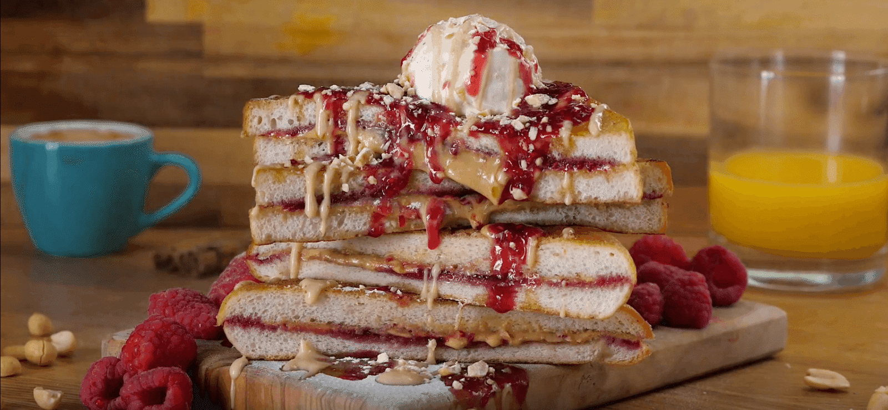

PBJ French Toast

If you love pb and j sandwiches, you will love this!
Ingredients
- 6 tablespoons peanut butter
- 6 tablespoons mixed berry jam
- 12 slices challah bread
- 1 cup milk
- 4 eggs
- 1/4 cup white sugar
- 2 tablespoons raspberry-flavored liqueur
- 1/2 teaspoon vanilla extract
- 1 tablespoon vegetable oil, or as needed
Directions
- Step 1
Spread 1 tablespoon peanut butter and 1 tablespoon jam onto one side of each of six bread slices; top each with another bread slice to make 6 sandwiches.
- Step 2
Whisk milk, eggs, sugar, raspberry-flavored liqueur, and vanilla extract together in a bowl until smooth. Dip each sandwich into egg mixture, turning to coat both sides.
- Step 3
Heat oil in a skillet over medium heat; cook sandwiches, working in batches, until golden brown, 3 to 4 minutes per side.